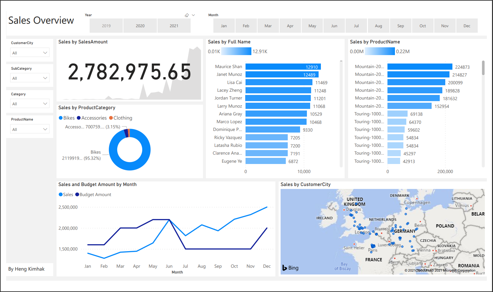

Sale Overview
Background
In order to track the performance of the company, Sale Overview is one of the key factor in determining the success. This dashboard was designed to show
- Number of sales throughout years
- Sales by Product Category
- Sales and Budget amount per month
- Sales by Customer Location
- Sales by Product Name
- Filterd by Year, Months, Customers' location, Sales' category, Category, Products' Name
SQL Code
/*
Queries used for Tableau Project
*/
-- 1.
Select SUM(new_cases) as total_cases, SUM(cast(new_deaths as int)) as total_deaths, SUM(cast(new_deaths as int))/SUM(New_Cases)*100 as DeathPercentage
From PortfolioProject..Covid_Death$
--Where location like '%states%'
where continent is not null
--Group By date
order by 1,2
-- Just a double check based off the data provided
-- numbers are extremely close so we will keep them - The Second includes "International" Location
--Select SUM(new_cases) as total_cases, SUM(cast(new_deaths as int)) as total_deaths, SUM(cast(new_deaths as int))/SUM(New_Cases)*100 as DeathPercentage
--From PortfolioProject..CovidDeaths
----Where location like '%states%'
--where location = 'World'
----Group By date
--order by 1,2
-- 2.
-- We take these out as they are not inluded in the above queries and want to stay consistent
-- European Union is part of Europe
Select location, SUM(cast(new_deaths as int)) as TotalDeathCount
From PortfolioProject..Covid_Death$
--Where location like '%states%'
Where continent is null
and location not in ('World', 'European Union', 'International')
Group by location
order by TotalDeathCount desc
-- 3.
Select Location, Population, MAX(total_cases) as HighestInfectionCount, Max((total_cases/population))*100 as PercentPopulationInfected
From PortfolioProject..Covid_Death$
--Where location like '%states%'
Group by Location, Population
order by PercentPopulationInfected desc
-- 4.
Select Location, Population,date, MAX(total_cases) as HighestInfectionCount, Max((total_cases/population))*100 as PercentPopulationInfected
From PortfolioProject..Covid_Death$
--Where location like '%states%'
Group by Location, Population, date
order by PercentPopulationInfected desc
-- Queries I originally had, but excluded some
-- Here only in case you want to check them out
-- 1.
Select dea.continent, dea.location, dea.date, dea.population
, MAX(vac.total_vaccinations) as RollingPeopleVaccinated
--, (RollingPeopleVaccinated/population)*100
From PortfolioProject..Covid_Death$ dea
Join PortfolioProject..Covid_Vaccination$ vac
On dea.location = vac.location
and dea.date = vac.date
where dea.continent is not null
group by dea.continent, dea.location, dea.date, dea.population
order by 1,2,3
-- 2.
Select SUM(new_cases) as total_cases, SUM(cast(new_deaths as int)) as total_deaths, SUM(cast(new_deaths as int))/SUM(New_Cases)*100 as DeathPercentage
From PortfolioProject..Covid_Death$
--Where location like '%states%'
where continent is not null
--Group By date
order by 1,2
-- Just a double check based off the data provided
-- numbers are extremely close so we will keep them - The Second includes "International" Location
--Select SUM(new_cases) as total_cases, SUM(cast(new_deaths as int)) as total_deaths, SUM(cast(new_deaths as int))/SUM(New_Cases)*100 as DeathPercentage
--From PortfolioProject..CovidDeaths
----Where location like '%states%'
--where location = 'World'
----Group By date
--order by 1,2
-- 3.
-- We take these out as they are not inluded in the above queries and want to stay consistent
-- European Union is part of Europe
Select location, SUM(cast(new_deaths as int)) as TotalDeathCount
From PortfolioProject..Covid_Death$
--Where location like '%states%'
Where continent is null
and location not in ('World', 'European Union', 'International')
Group by location
order by TotalDeathCount desc
-- 4.
Select Location, Population, MAX(total_cases) as HighestInfectionCount, Max((total_cases/population))*100 as PercentPopulationInfected
From PortfolioProject..Covid_Death$
--Where location like '%states%'
Group by Location, Population
order by PercentPopulationInfected desc
-- 5.
--Select Location, date, total_cases,total_deaths, (total_deaths/total_cases)*100 as DeathPercentage
--From PortfolioProject..CovidDeaths
----Where location like '%states%'
--where continent is not null
--order by 1,2
-- took the above query and added population
Select Location, date, population, total_cases, total_deaths
From PortfolioProject..Covid_Death$
--Where location like '%states%'
where continent is not null
order by 1,2
-- 6.
With PopvsVac (Continent, Location, Date, Population, New_Vaccinations, RollingPeopleVaccinated)
as
(
Select dea.continent, dea.location, dea.date, dea.population, vac.new_vaccinations
, SUM(CONVERT(int,vac.new_vaccinations)) OVER (Partition by dea.Location Order by dea.location, dea.Date) as RollingPeopleVaccinated
--, (RollingPeopleVaccinated/population)*100
From PortfolioProject..Covid_Death$ dea
Join PortfolioProject..Covid_Vaccination$ vac
On dea.location = vac.location
and dea.date = vac.date
where dea.continent is not null
--order by 2,3
)
Select *, (RollingPeopleVaccinated/Population)*100 as PercentPeopleVaccinated
From PopvsVac
-- 7.
Select Location, Population,date, MAX(total_cases) as HighestInfectionCount, Max((total_cases/population))*100 as PercentPopulationInfected
From PortfolioProject..Covid_Death$
--Where location like '%states%'
Group by Location, Population, date
order by PercentPopulationInfected desc